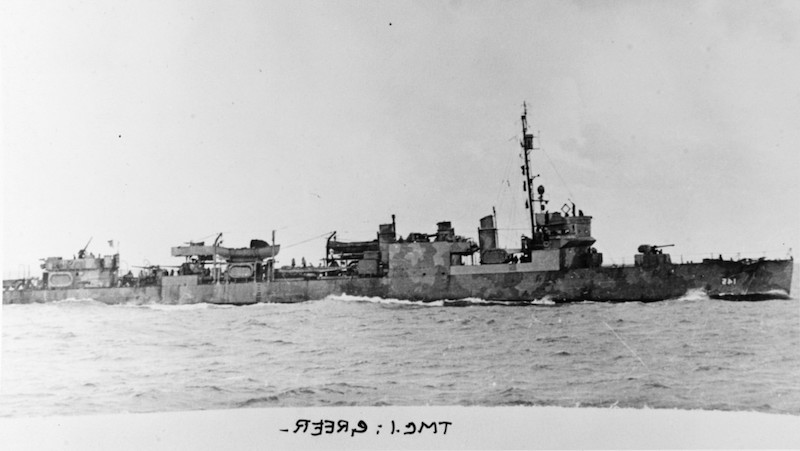

Hasselwander noted that historians will sometimes say or suggest that Lt. Fraatz, commander of U 652, might have mistaken Greer for one of the Wickes-class destroyers the US traded to Britain in exchange for Western-hemisphere bases in the deal of September 1940, and thus a legitimate target; Hasselwander specifically cites Kurt Assman to this effect (Nur Assmann erklärt, daß der Kommandant geglaubt habe, sein Verfolger sei einer der fünfzig amerikanischen Zerstörer, welche die Vereinigten Staaten ab September 1940 Großbritannienüberlassen hatten.).1 I’ll have more to say about destroyers-for-bases another time; for now, I’ll give this post over to a discussion of this possibility of mistaken identity.

You can see above a photograph of the Greer and a photograph of one of her sister ships traded to Britain, which became HMS Newmarket. The question of whether Greer might have looked like one of these newly British ships was raised within a couple weeks of the incident, and Time magazine took it up, explaining that the Greer had been modified and therefore looked different from other, once-similar destroyers. It’s true, I think, that you can see this in these photos if you look: the forward stack has been changed, with a “spark screen” added; the stacks have been lowered, too. The guns are different. And of course, so is the livery. Moreover, Time noted, the Greer was sailing on its own, as British destroyers did not. It was, as we have seen, broad daylight—that is why Fraatz did not surface.
Still, I would concede that the two ships look quite similar and if I were looking through a U-boat periscope I might well not be able to tell the difference. Hasselwander notes further that there is no indication Fraatz thought he was looking at a British destroyer. (Die verfügbaren Teile des Logbuchs von U652 deuten jedoch darauf hin, daß die Ähnlichkeit von Greer mit den England überlassenen Zerstörern Fraatz nicht aufgefallen ist.)2
Moreover, to repeat again what we noted in the earlier post, Fraatz did notice that the Greer was not acting like a British destroyer, given its “hesitating behavior” („zögernde Verhalten,“ Hasselwander is quoting Fraatz). Hasselwander goes on to suggest that Fraatz didn’t mean the torpedoes to sink the ship, but rather intended them as a (momentarily successful) effort to throw the Greer off his trail (Die geringe Entfernung, auf die U 652 seinen zweiten Torpedo schoß, und die anscheinend überstürzte Art, in der dies geschah, lassen vermuten, daß Fraatz seinen Angriff hauptsächlich als Ablenkungsmanöver gedacht hatte, um seinen Verfolger abzuschütteln. Tatsächlich gelang es ja U 652, bis 15.07 h weitere Horchkontakte zu vermeiden).3
We should not, it seems to me, throw out this suggestion absent evidence. But also, it is a bit of a red herring. Roosevelt’s argument about the appropriate US response to the incident did not hinge on the U-boat captain’s knowing that the Greer was a US ship.